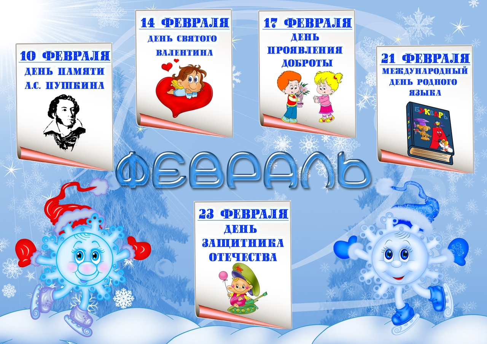
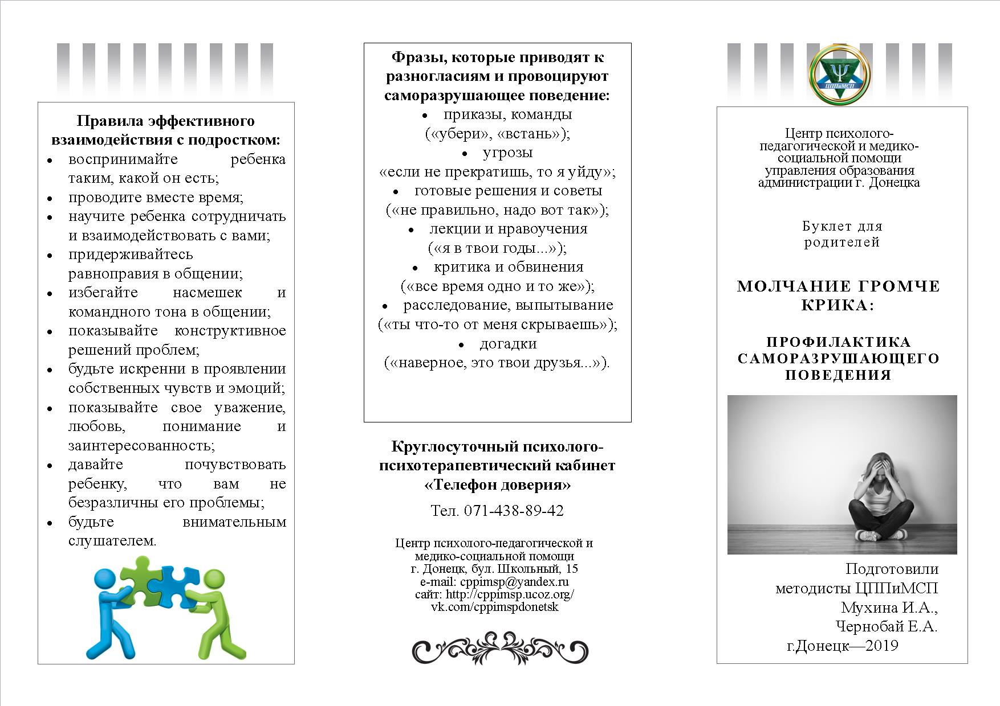
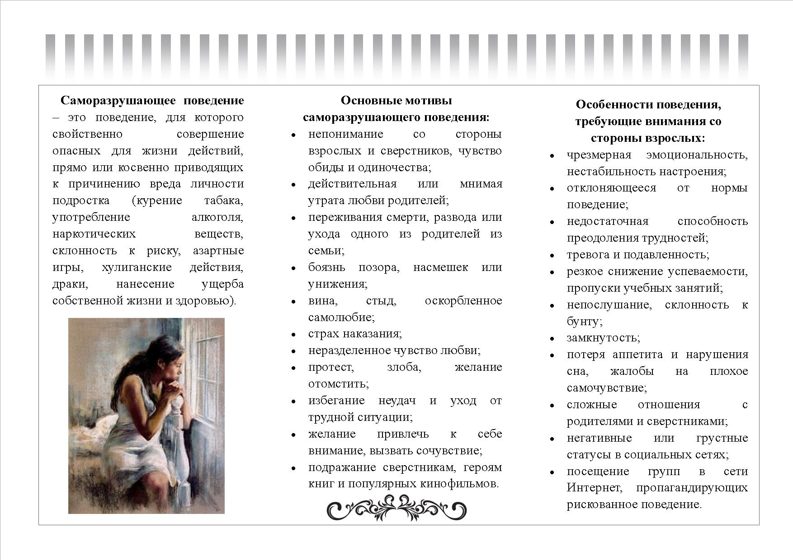
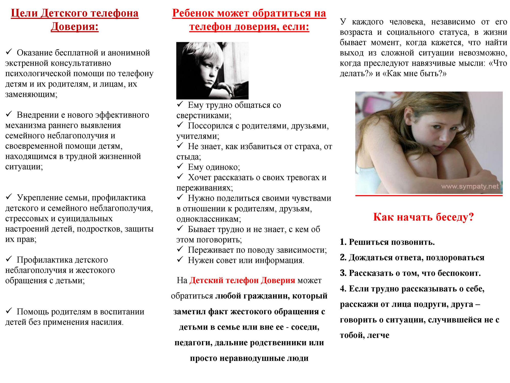

Воспитательная работа
СОДЕРЖАНИЕ МОДУЛЯ «КЛАССНОЕ РУКОВОДСТВО»
(план воспитательной работы в классе)

| 1-4 класс | 5-8 класс | 9-11 класс |
| 1-4 класс | 5-8 класс | 9-11 класс |
| 1-4 класс | 5-8 класс | 9-11 класс |

| 1 - 2 класс |
| 3 - 4 класс |
| 5 АБВ класс |
| 6 АБВ класс |
| 7 АБВ класс |
| 8 АБВ класс |
| 9 АБВ класс |
| 10 - 11 класс |
Система дополнительного образования в школе
Дополнительное образование выступает средством непрерывного образования и формирования личности, средством воспитания и в тоже время источником мотивации учебной деятельности, выбора профильного обучения, помогает в выборе профессии.
Важнейшим элементом структуры дополнительного образования являются школьные кружки, которые развивают и поддерживают интерес учащихся к деятельности определенного направления, дают возможность расширить и углубить знания и умения, полученные в процессе учебы. Кроме того, разнопрофильность кружков создает условия для разностороннего развития личности.
Дополнительное образование дает глубокий эмоциональный заряд, который подкрепляется видимым результатом: готовая поделка, сыгранная роль, участие в выставке, концерте, соревновании и т.д.
Задачи, решаемые коллективом педагогов школы, работающих в системе дополнительного образования следующие:
- Развитие у обучающихся мотивации к познанию и творчеству;
- Создание условий для творческой реализации;
- Интеллектуальное духовное развитие личности ребенка;
- Профилактика асоциального поведения;
- Приобщение учащихся к общечеловеческим ценностям;
- Создание условий для социального, культурного и профессионального самоопределения.
- Формирование и закрепление традиций школы.
Самоуправление
Организация работы школьного ученического самоуправления в 2022-2023 учебном году.
Конференция ШУС – октябрь 2022
Здравствуйте! Добрый день ребята, мы рады приветствовать вас на Конференции школьного ученического самоуправления.
Сегодня мы здесь, чтобы вместе на общешкольной конференции подвести итоги нашей работы, оценить, что мы успели сделать, что получилось, что – не очень, и наметить планы на будущий год.
На повестке конференции стоит три вопроса: Итоги работы за 2021-2022 учебный год, утверждение Примерного плана работы на 2022-2023 учебный год и знакомство с программой Президента школы.
Прошел год, и нам предстоит подвести итоги работы за 2021-2022 учебный год. Отчет предоставлен Лидером школы 2021-2022 года Чвиковой Анастасией.
Итоги
В начале учебного года прошло обновление структуры ученического самоуправления, разработано положение, обновлена форма актива класса. Предлагаем для ознакомления Порядок работы школьного ученического самоуправления, примерный план работы ученического самоуправления на новый учебный год
Презентую вам Президента ученического самоуправления в новом учебном году – Кияшкину Софию. Многие помнят её по прошлому году, кому-то довелось с ней поработать, а для тех, кто не знаком с Софией – её представление.
В рамках конференции заслушаны основные вопросы по организации жизнедеятельности коллектива обучающихся нашей школы, и в результате конференция постановила:
- Признать работу ШУС за 2021-2022 учебный год удовлетворительной.
- Утвердить и принять за основу для работы представленный предварительный план работы на 2022-2023 учебный год.
- Опубликовать материалы конференции для ознакомления на сайте школы и группе ВК МБОУ «ШКОЛА 90 Г.ДОНЕЦКА» (https://vk.com/public215430044).
- Решение конференции вступает в силу со дня его принятия.
Заканчивая выступление, хочется напомнить, что же такое самоуправление.
Школьное самоуправление рассматривается как ваша самостоятельность в проявлении инициативы, в принятии решений.
В широком же смысле – это образ жизни и поведение всего школьного коллектива и каждого из вас, результатом которого является: самостоятельность, инициатива, взаимопомощь, ответственность и организованность.
Самоуправление в школе способствует самовыражению и самораскрытию. Полагаю, оно позволяет использовать, проявлять и развивать ваши индивидуальные способности и таланты, обеспечивает возможность вашей самореализации. Участие в самоуправлении в немалой степени способствует развитию ваших личностных качеств, таких как ответственность, общительность, трудолюбие, настойчивость, инициативность, креативность, нравственность и т.д. Кроме того эти качества необходимы для будущей профессиональной деятельности, т.е. самоуправление готовит вас к будущей жизни.
Уверена, для вас опыт самоуправления в школе будет очень полезен.
От всей души хотим поблагодарить всех участников нашей конференции. Хочется верить, что нам удалось создать площадку, на которой вы все сможете изложить свои взгляды, предлагать свои идеи, воплощать их в жизнь, высказываться по наболевшим вопросам.
Спасибо что вы с нами!
СОВЕТ ЛИДЕРОВ САМОУПРАВЛЕНИЯ
2021-2022 УЧЕБНЫЙ ГОД
ПЛАН РАБОТЫ ШКОЛЬНОГО САМОУПРАВЛЕНИЯ
НА 2021-2022 УЧЕБНЫЙ ГОД
29 сентября в онлайн режиме прошло заседание актива ученического самоуправления. На повестке дня стояли вопросы выбора совета лидеров, обсуждение плана работы, подготовка ко Дню Учителя и участие в акции «Всеобуч».
После выступления кандидатов и непродолжительного обсуждения был утвержден совет лидеров самоуправления на 2021-2022 учебный год. Были выслушаны предложения по составлению плана работы с учетом эпидемиологической ситуации, и план принят для утверждения на конференции.
Поздравление педагогов от актива ученического самоуправления и воспитанников кружка «Первый шаг» необходимо выложить в группе в ВК.
Спасибо всем за работу!
Отчет 10-A (11а) за 2019-2020 уч.год
ИТОГИ С У 2019-2020
Программа кандидата на лидера ШСУ Шипулина Виктория
Психолог и я
- 19.04.2022 Что слышит ребенок когда мы говорим
- 19.04.2022 Памятка учащемуся, попавшему в трудную ситуацию
- 11.04.2022 ЧТО ТАКОЕ ПРОФЕССИЯ. УСПЕШНЫЙ ВЫБОР ПРОФЕССИИ. ОШИБКИ ПРИ ВЫБОРЕ ПРОФЕССИИ.
- 11.04.2022 Тест интересов и склонностей для старшеклассников
- 28.03.2022 Всемирный день распространения информации о проблеме аутизма 1-2 апреля
- 28.03.2022. Факты об аутизме
- 28.03.2022.Памятка для родителей о "Детях дождя"
- 28.03.2022 Буклет особенности развития детей
- 28.03.2022 Положение для детей с РАС
- Стоп! Правонарушение
- Стоп! Насилию в семье.
- Памятка родителям о семейном кодексе.
- Закон от 29.07.2020 Об опеке и попечительстве
- Выявление детей группы суицидального риска.
- Алгоритм Действий при возникновении проявлений агрессии и суицидального поведения обучающихся
- Ошибки при выборе профессии
- Буклет часть 1. Осторожно интернет!
- Буклет часть 2. Осторожно интернет!
- ПСИХОЛОГИЧЕСКИЕ РЕКОМЕНДАЦИИ О ПОВЕДЕНИИ И ДЕЯТЕЛЬНОСТИ ЧЕЛОВЕКА В ЭКСТРЕМАЛЬНОЙ СИТУАЦИИ ПАНДЕМИИ (COVID-19)
- Типичные ошибки родителей по ГИА
- Рекомендации родителям по ГИА
- Родителям по воспитанию ребенка с умственной отсталостью
- Родителям по воспитанию ребенка со зрительным дефектом
- Родителям по воспитанию ребенка с ЗПР
Законодательство ДНР «Насилие в семье в отношении детей»
  "Движение первых"
9 апреля в школе прошла церемония открытия первичного отделения Российского движения детей и молодежи «Движение Первых». Присутствующие педагоги и родители-наставники, инициативная группа обучающихся в торжественной обстановке произнесли слова обещания, которые будут всегда помнить и следовать им. Для каждого это время ярких событий, смелых планов и время исполнения самой заветной мечты, потому что
«Я В ДВИЖЕНИИ!»
«МЫ В ДВИЖЕНИИ!»
«ВСЕГДА В ДВИЖЕНИИ!»